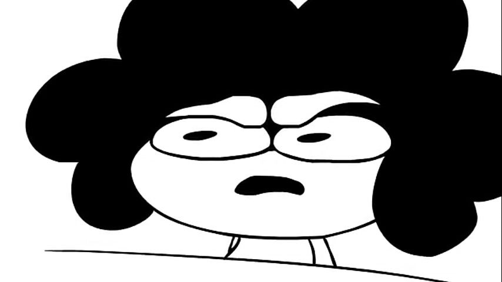

Honestamente, la historia es lo de menos; te apuesto que una vez que comiences a jugar, será lo último que te interesará. En The House of The Dead: Remake la experiencia de juego es lo más importante. Digamos que la historia es un pretexto para tematizar el juego y justificar la presencia de zombies, pero por momentos es fácil perderse con tantos movimientos de cámara y breves interacciones que no dejan profundizar en ese argumento. No estaría de más dedicarle algunas ilustraciones o una cinemática especial que contara el trasfondo, pero eso no existe en esta versión, así que tendrás que buscar en otro lado si quieres enterarte del trasfondo.
Tal vez si lo juegas en una arcade con otra persona para echar la tarde pueda llegar a divertir, pero por todo lo demás es el tipico Shooter sobre rieles, así que se vuelve repetitivo y si lo juegas en consola, seguro te aburrirás más rápido